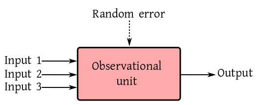
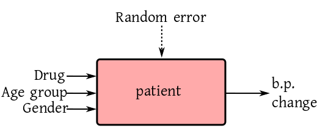
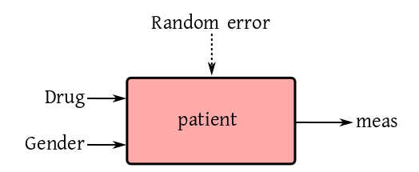
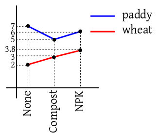
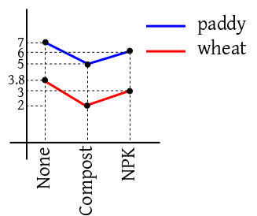
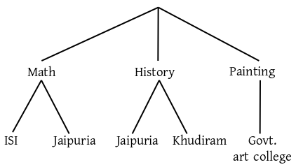
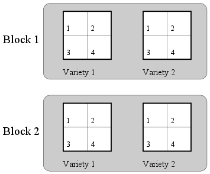

There are different types of situations which give rise to
approximate linear system of equations, and hence linear
models. We shall discuss the most important types in this page.
In most walks of science we are interested in studying the effect
of input(s) on some
object. For instance, drug on a mouse, fertiliser and sunlight on a plant,
reagents on a
chemical, a teaching technique on a student, etc. To do so we
observe some output from the system. The input-output behaviour
sheds light on the internal working of the object of study. This
may be expressed as a box diagram.

We want to model the output as a
function of all the inputs, i.e., same set of inputs must
give the exactly same output. However, this never occurs
in practice. If two twins are both given the same dose of the
same medicine, still their body temperatures can never be
guaranteed to be the same. This is due to the presence of lots
tiny factors that can never be precisely recorded. We sum up all
these ellusive influences into a single input called Random
error.
Before we start discussing various examples, we need to know a
few terms. Also we need to know how to store the data for a
typical linear model.
Each inputs may be either continuous or categorical. A
categorical. input us called a factor. A continuous input
is called a covariate. For example, age is a
covariate, but age group is a factor. The different values
of a factor are called its levels. For
example, smoking habit may have two levels smoker
and non-smoker.
The output of a linear model is always considered continuous. So
is the random error.
Some of the inputs may be applied by an experimenter, while the
others may be just there. For example, to study the effect of a
particular drug on blood-pressure patients the doctor cannot
ignore the effects of age group and gender. So the diagram looks like:

Here the drug is applied by the experimenter, while age and
gender are naturally present. Accordingly, we
have treatment versus control.
A study where at least one of the inputs is applied by the
scientist is called a
designed experiment. If all the inputs are chosen by
nature (the scientist being a merely passive spectator), then we
have an observational study.
If there is/are only categorical inputs, then we call it an ANOVA
model. If the number of categorical inputs is $k$ it is
a $k$-way ANOVA model.
If all the inputs are continuous we call it a regression
model.
If both categorical and continuous inputs are present, then we
have an ANCOVA model. Again, if there are $k$ categorical
inputs, then it is a $k$-way ANCOVA model.
Before you can apply a linear model software, the
data set must be in a particular layout. This layout is governed
by the input-output diagram. There must be a column for each
input (except the random error) and output. The name of each
input must be the heading for its column. The values in the
column for a factor must be the levels for that factor. Each row in the data
set must correspond to one observational unit.
For example, if the input-output diagram is like this:
and there are 6 patients, then a typical data set would look
like:
Drug AgeGroup Gender B.P.Change
Minipress Old 1 23.6
Minipress Middle 1 24.8
Minipress Young 2 2.9
Qualipro Old 2 45.1
Qualipro Middle 1 19.8
Qualipro Young 2 20.1
We should load this data set (stored in the
file med.txt) as
dat = read.table('med.txt',head=T)
You should check the loaded data set immediately after loading:
dim(dat)
names(dat)
head(dat)
tail(dat)
R, like most other softwares, thinks that valriables with
numerical values are continuous. Here, however, Gender is
a factor, though its values are numeric. So it is a good idea to
tell R explicitly to consider Gender as a factor:
dat[,'Gender'] = factor(dat[,'Gender'])
You could also change the labels to Male
and Female:
The simplest example of a linear model is one without any input
at all (well, except the inevitable random error). Had there been
no random error the output should always be the same. If we denote
that ideal constant output by $\mu,$ then the actual output
(in presence of random error) is
$$
y_i = \mu+ \epsilon_i,
$$
where $i=1,...,n.$ We assume $\epsilon_i\sim
N(0,\sigma^2).$
This models a scenario where a fixed uknown
quantity $\mu$ is being measured $n$
times. Here $\epsilon_i$ is the random error for
the $i$-th measurement. In matrix notation this is
$$
\left[\begin{array}{ccccccccccc}y_1\\\vdots\\y_n
\end{array}\right]
=
\left[\begin{array}{ccccccccccc}1\\\vdots\\1
\end{array}\right]\left[\begin{array}{ccccccccccc}\mu
\end{array}\right]
+
\left[\begin{array}{ccccccccccc}\epsilon_1\\\vdots\\\epsilon_n
\end{array}\right].
$$
Here $\epsilon\sim N_n(0,\sigma^2 I).$
Here the data file should have a single column (for the
output). One such file is meas.txt. We load this
file first:
dat = read.table('meas.txt',head=T)
Then we apply our trivial model as follows.
lm(measurement~1, dat)
Notice the first argument, which is a compact form of the box
diagram. The output variable is written to the left of
the ~. The inputs are listed after
the ~. In this example, we do not have any
input. This is expressed by writing a 1 after the ~.
The lm function produces a lot more output than is
printed on screen by default. Usually we store the entire output
in some variable for detailed inspection later.
fit = lm(measurement~1, dat)
To get a brief glimpse of the wealth of information stored in the
variable fit you can use:
names(fit)
We shall learn about these later. For the time being it might of
interest to see the design matrix:
This is a linear model with a single factor (i.e., a categorical
input). This single factor may be a
treatment or a control. One example could be yield of paddy from an
agricultural plot when different fertilisers are used.
If there are three types fertilisers in use (say None, Compost
and NPK), then 5 plots under each fertiliser, then a typical
experiment could be carried out by assigning each fertiliser to 5 random plots.
As you can guess, the data file should have 2 columns, one for
the output and the other for the input. Such a file is given
in anova1.txt.
Since there is only one input (other than the inevitable random
error), it is expected that the plots are identical w.r.t. all
other points related to the yield (e.g., sunlight, irrigation
etc). So had there been no random error present, we would expect
all the plots with the same fertiliser to produce the same
yield. For the $i$-th fertiliser, we denote this ideal yield
by $\mu_i.$ So the model is
$$
y_{ij} = \mu_i + \epsilon_{ij},
$$
where $i=1,2,3,$ and $j=1,...,5.$ It is customary to
write this slightly differently (though equivalently) as
$$
y_{ij} = \mu+ \alpha_i + \epsilon_{ij}.
$$
This is how R does it.
Indeed, the 1 term may be dropped (when there are more terms in
the RHS). Thus we could also write
fit2 = lm(yield ~ fertiliser, dat)
and get the same effect. If, on the other hand, you insist on not
having the intercept term, then you need to write
fit3 = lm(yield ~ fertiliser-1, dat)
Let's check the design matrices:
model.matrix(fit3)
This is just as expected. But something unexpected occurs for the
model with intercept:
model.matrix(fit1)
Here R has tried to simplfy the design matrix by dropping
redundant columns. This keeps the design matrix full column
rank. This is R's way of giving you one least square
solution.
This is where we have two input factors. Both these factors could
be treatments (e.g., if in the last example we add "tillage" as a new factor with two
levels "manual" and "tractor"). A more commonly occuring case is
where one factor is a treatment while the other is a control. We
discuss one such example below.
We want to see the effect of a particular drug on men and women
or a certain age group. We choose 100 volunteers of either
gender, and then randomly split each gender group into two
halves. One half gets the real drug, while the other half gets a
placebo. So the box diagram is like:

Here Drug is a factor with two levels, real
and placebo. Also, Gender is a factor with the
levels Male and Female.
A typical data file (anova2.txt) consists of three columns,
headed Drug, Gender and meas. In this file
we have encoded Real by 1 and Placebo by 0.
Since we have only two factor inputs (except the random error),
hence in absence of random error, we would expect all patients
with the same input combination to provide the same
measurement. There are $2\times2 = 4$ input combinations
here:
We call each of these a cell, and assign one ideal
constant response value for each cell to get the cell means model:
$$
y_{ijk} = \mu_{ij} + \epsilon_{ijk}.
$$
Again, it is more customary to write it as
$$
y_{ijk} = \mu + \alpha_i + \beta_j + \gamma_{ij} + \epsilon_{ijk}.
$$
dat = read.table('anova2.txt',head=T)
fit = lm(meas~drug * gender,dat)
model.matrix(fit)
Note that drug * gender is an abbreviation
for $\alpha_i+\beta_j + \gamma_{ij}.$ If you want, you can
also write this as:
drug + gender + drug:gender. Here
the drug:gender standas for $\gamma_{ij}.$
Next, we consider an example with two
treatments, fertiliser and crop. Here it is natural
to ask the question which fertiliser is the best. This natural
question, however, may be a meaningless one in certain
situations. For instance if the cell means are as shown in the
following diagram, then the optimal choice of fertiliser depends
on the crop at hand.

But if the diagram looks like the following, then we can indeed
answer the question.

In the first case we say that there is interaction
between crop and fertiliser. In the second case,
there is no such interaction.
If there is no interaction, then the model simplifies to
$$
y_{ijk} = \mu + \alpha_i + \beta_j + \epsilon_{ijk}.
$$
It is possible to distinguish between the two case graphcally
using data.
Here are two files, inter1.txt
and inter2.txt. The following technique constructs
the interaction plot based on the first data set.
Now do the same thing with the second data set to see the
difference.
The no-interaction model (also called an additive model)
may be specified in R as follows.
(fit = lm(yield~fert+crop,dat1))
In a model like $\mu+\alpha_i+\beta_j+\gamma_{ij}$ we say
that $\alpha_i$ and $\beta_j$'s are the main
effects, while $\gamma_{ij}$'s are the interaction
effects. If we have more inputs, we may have higher order
interactions also. For instance, if we have three factor
inputs, then we have have a second order interaction
effect called $\gamma_{ijk}.$ The order is always
one less than the number of subscripts.
So far, whenever there are mutiple factors going into the box
diagram, we are taking Cartesian product of all the levels. For
instance, if one factor is Gender and another
is Smoker, then we have $2\times 2 = 4$ combinations:
(Male, Yes), (Male, No), (Female, Yes,), (Female, No).
There are situations, however, where a tree-like structure is
more appropriate. One factor, for example, could
be Subject and another could be College. If the
subjects are Math, History and Painting, then it is quite likely
that some of the colleges do not teach all the subjects, e.g.,
Govt. Art College doesn't teach Math, and ISI doesn't teach
painting. So we have a nested structure:

Here it is meaningless to ask for the main effect of ISI, since
it only comes under Math. Here say that College is nested
under Subject.
Mathematically, we have the main effect for the higher factor
(Subject, in this case) and the interaction effect:
$$
y_{ijk} = \mu + \alpha_i + \gamma_{ij} + \epsilon_{ijk}.
$$
In R formula syntax, this is
Suppose that we have a spring from which we can hang known
weights and measure the resulting length of the spring. We want
to estimate the spring constant. The model here is
$$
y_i = \alpha + \beta x_i + \epsilon_i.
$$
Here $\alpha$ is the initial length of the spring (assumed
unknown) and $\beta$ is sprint constant that we are after.
A typical data set is in spring.txt. We can analyse
it as follows.
dat = read.table('spring.txt',head=T)
fit = lm(len ~ wt, dat)
Of course, in practice, the initial length of the spring would be
known. Say it is 5. Then the model becomes
$$
(y_i-5) = \beta x_i + \epsilon_i.
$$
Here we change the formula used in R:
Suppose that you want to fit a quadratic regression model, i.e.,
$$
y_i = \alpha + \beta x_i + \gamma x_i^2 + \epsilon_i.
$$
You might be tempted to write
fit = lm(y~x+x^2,dat)
This won't work. Actually, it will still fit a straight line. You need to write
Suppose that we want to study the relation between height and
weight for both men and women. In particular, we want to model
the situation where the regression lines are parallel (i.e.,
share the slope, while the intercept may be different).
lm(weight ~ gender + height-1)
If we want allow different slopes with same intercept, then
The formula technique is good for specifying most commonly used
models. Ocassionally we need to specify a nonstandard model. A
weighing design is one such example. Then we can always construct
the design matrix directly, and specify y~mat-1 as a
formula, where mat is our design matrix.
We have already seen an example of this for the weighing design
example in the introduction.
These exercises are some of the most important ones in this
course. These are the types of problems where you will be
using linear models in real life. I have deliberately used "real
life" language (as opposed to a statistical one) in describing
the data. Even preparing the data set to be read by R is
irritating in most cases. But still do them. They will help you
in your data analysis career far more than memorising complicated theorems.
Consider the 1-way ANOVA model $y_{ij} = \mu + \alpha_i +
\epsilon_i$ where $i=1,2,3,$ and $j=1,2.$ Generate such a data
set using R where $\epsilon_{ij}$'s are
IID $N(0,0.2).$ Take $\alpha_i$'s as you want. Create
a data set of the proper layout, and apply lm to
estimate $\alpha_i$'s.
Write
down the design matrix in the above problem. What is its rank?
Use the model.matrix command to check the design
matrix used by R. How does it differ from what you wrote down?
Guess what design matrix R would use if $i=1,...,4$
and $j=1,2.$
Here we consider an inheritance study on beef animals of several sire
groups (males) each
mated to a separate group of dams (females). Birth weights of male progeny calves
were recorded.
The data consist of birth weights (in lbs) of eight
male calves in each of five sire groups. The sire groups
are numbered as
177, 200, 201, 202 and 203. In each group there are 8 sires.
The birth weight of the progeny of each sire
is listed in the column for its group in the following table.
Sire groups
177
200
201
202
203
61
75
58
57
59
100
102
60
56
46
56
95
60
67
120
113
103
57
59
115
99
98
57
58
115
103
115
59
121
93
75
98
54
101
105
62
94
100
101
75
Source:Kuehl (2000)
Model birth weight in terms of the sire effect. Use R to fit your model.
An experiment,
described in Milliken and Johnson (1992) was
conducted by a company to compare between the performances of 3
different brands of machines when operated by the company's own
personnel. 6 employees were selected at random and each of them had to
operate each machine 3 different times. The data set given below
consists of
overall scores that take into account both the quantity and quality of
the output.
Machine 1
Machine 2
Machine 3
Operator
1
2
3
1
2
3
1
2
3
1
52
52.8
53.1
62.1
62.6
64
67.5
67.2
66.9
2
51.8
52.8
53.1
59.7
60
59
61.5
61.7
62.3
3
60
60.2
58.4
68.6
65.8
69.7
70.8
70.6
71
4
51.1
52.3
50.3
63.2
62.8
62.2
64.1
66.2
64
5
50.9
51.8
51.4
64.8
65
65.4
72.1
72
71.1
6
46.4
44.8
49.2
43.7
44.2
43
62
61.4
60.5
Source: Milliken and Johnson (1992)
The ultimate aim is to model the score in terms of machine and operator
effects (ignoring time). You have to use R to create an
interaction plot and visually check if there is any interaction
between machine and operator effects.
In this data set from Kuehl (2000) our interest lies in comparing two
standard pesticide methods. In particular, we want to compare if the
amount of residue left on cotton plant leaves is the same for the two
methods, which we shall call methods 1 and 2.
To test this, 6 batches of plants were sampled from the field. 2 plants
were used in the experiment from each batch. Thus, there were 12 plants
in the experiment. The
plants inside each batch were from the same field plot.
Method 1 was applied to 3 randomly selected batches, and the
remaining 3 batches were given method 2. The amounts of residue on the leaves
were measured after a specified amount of time for each of the 12 plants,
resulting in the following data set.
Method 1
Method 2
Batch 1
Batch 2
Batch 3
Batch 4
Batch 5
Batch 6
120
120
140
71
70
63
110
100
130
71
76
68
Source:Kuehl (2000)
Fit a suitable linear model to this data using R.
The data set for this example comes from Milliken and Johnson (1984). It is
an agricultural data set obtained from a design laid out as
follows. We want to compare between four fertilizers and two varieties of
crops. We have 4 (whole) plots to try these on. These are grouped into two
blocks. The two varieties are assigned randomly to the two (whole) plots
in each group. Each (whole) plot is split into 4 subplots, and the 4
fertilizers are applied randomly to these.
Such a design is called a split plot design.

Split plot layout of the experiment
The yield of crop for each
subplot is noted. So we get the following data set.
Block 1
Block
2
Fertilizer
Variety 1
Variety 2
Variety 1
Variety 2
1
35.4
37.9
41.6
40.3
2
36.7
38.2
42.7
41.6
3
34.8
36.4
43.6
42.8
4
39.5
40
44.5
47.6
Milliken and Johnson (1984)
This example is based on a clinical data set presented in Hocking (2003),
where a pharmaceutical firm wants to test a new drug for a particular
disease. The response is a measure of the improvement in the patients' status.
A sample of 3
clinics is selected at random from a large population of clinics. From
each clinic a sample of 10 patients with the particular disease are
selected. The drug is applied to each patient and we record both the
response ($Y$) of the drug as well as a relevant physical
characteristic ($Z$) for each
patient. This leads to the following data set.
Clinic 1
Clinic 2
Clinic 3
Y
Z
Y
Z
Y
Z
11
6
6
0
16
13
8
0
6
2
13
10
5
2
7
3
11
18
14
8
8
1
9
5
19
11
18
18
21
23
6
4
8
4
16
12
10
13
19
14
12
5
6
1
8
9
12
16
11
8
5
1
7
1
3
0
15
9
12
20
Hocking (2003)
After drying beech wood the humidity level at any given point inside a
plank typically
depends on the the depth of the point. In this example we want to study
the relation between the humidity level (measured as a percentage) with
the depth for 20 different randomly selected beech planks. For each plank
we measure the humidity level for 5 depths and 3 widths. The
resulting data set is shown below.
Depth=1
Depth=3
Depth=5
Depth=7
Depth=9
Widths
1
2
3
1
2
3
1
2
3
1
2
3
1
2
3
3.4
4.1
4.4
4.9
4.7
4.8
5
5.2
5
4.9
4.6
4.9
4
4.3
4.2
4.3
3.9
4
5.5
5.6
4.7
6.2
5.7
4.5
5.4
5.5
3.9
4.7
4.9
4
4.2
5.4
4.5
5.5
6.2
4.9
5.6
6.1
4.9
6.3
6.4
4.9
4.5
5.2
4.4
4.4
4.6
4.9
6
6.1
5.9
7.1
6.6
5.8
6.9
6.5
6.4
4.6
4.7
4.7
3.9
4.2
4
4.7
5.2
4.4
5.2
5.4
4.4
5
4.8
4.1
3.7
3.9
3.5
4.6
5.9
5.2
5.9
7.3
5.7
6.3
6.9
6.6
5.8
6.9
6
4.8
4.4
4
3.9
4.9
4.3
5.6
6.9
5.4
6
7.1
5.9
5.3
6.1
5.5
5
4.5
4.2
3.9
3.7
3.8
4.5
4.9
4.5
5.3
4.8
5.4
5.6
4.9
4.8
4.7
4.3
4
3.6
3.8
3
4.1
5.1
3.9
4
5
4.7
4.4
4.6
4.9
3.7
3.3
3.8
6.5
6.9
5.8
8.7
8.9
7.5
9.5
7.4
7.7
7.9
7
7.3
6.6
6.9
5.9
3.7
4.7
3.7
5.2
5.8
5
5.5
5.7
6.3
5.9
4.9
5.2
4.4
4.2
4.3
4.3
4.8
5.1
5.8
6.7
5.7
6.2
7
5.9
5.2
6.1
6.4
4.4
5.2
5.1
6.5
5.9
4
8.8
7.5
4.2
9.1
8.4
4.9
8.9
7.9
4.6
6
5.7
3.5
4.4
5.7
4.6
6.2
7
6.2
6.7
7.4
6.8
6.4
7.3
5.8
4.3
5.5
4.9
5.5
6.4
6.5
7.1
8.4
8.4
7.5
8.9
9.1
6.9
8.1
9.2
5.4
6.1
7.5
5.2
6.6
5.9
6
7.6
6.7
6.2
7.8
6.7
6.6
7.7
5
5.3
5.8
3.9
3.7
3.7
3.7
4.5
4.4
4.5
5
4.8
4.7
4.5
4.4
5.3
3.7
4.3
3.9
6
6.9
5.1
7.4
8.6
6.1
7.8
8.8
5.2
7.5
7.5
5.4
5.7
5.4
4.7
3.8
3.7
3.3
4.6
4.7
3.5
4.8
4.7
3.7
4.4
4.3
3.4
3.8
3.7
3.2
6.1
4.7
4.7
7.4
6.3
6
7.7
7.1
6
6.7
6.5
6.3
4.6
5.1
4.2
Netmaster
Make an interaction plot to visually check interaction between
depth and width.
Redo the above problem with the extra condition: $\beta_0-\alpha_0 = (\beta_1-a_1) x_0.$
Comments
To post an anonymous comment, click on the "Name" field. This
will bring up an option saying "I'd rather post as a guest."